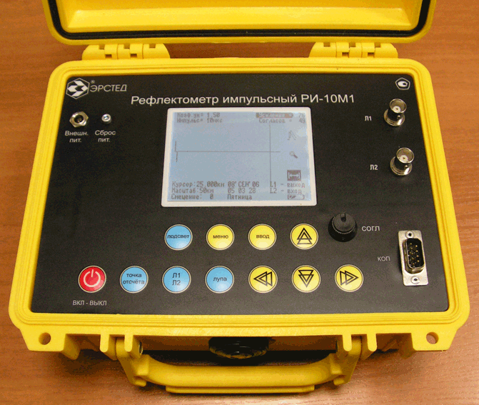

Импульсный рефлектометр
Рефлектометр для кабельных линий (Time Domain Reflectometer, англ. TDR) — устройство, предназначенное для выявления дефектов в кабельных линиях локационным (рефлектометрическим) методом.
Принцип работы
Рефлектометр для кабельных линий работает по следующему принципу:
- В проверяемый кабель подаются короткие электрические импульсы
- Если в кабеле имеются неоднородности или повреждения, энергия импульса полностью или частично отражается обратно к прибору
- Возвращенный отраженный сигнал измеряется, результаты измерений анализируются и затем выводятся на дисплей
Возможности
Рефлектометр для кабельных линий позволяет определить характер и местоположение основных неоднородностей или повреждений присутствующих в кабелях:
- обрывы;
- короткие замыкания;
- места замыканий кабеля;
- перепутанные пары;
- параллельные отводы;
- плавающие дефекты;
- катушки Пупина;
- переход на жилу другого диаметра;
- плотная земля.